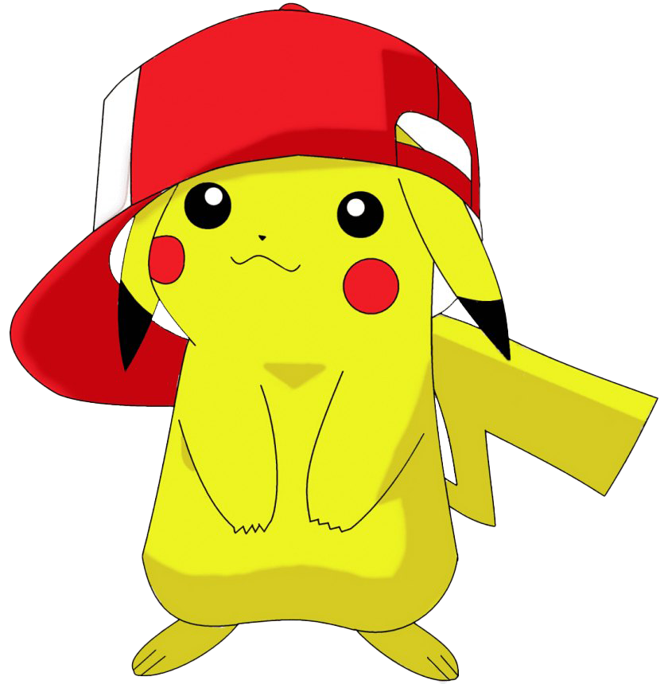

Quem somos
O jogo foi desenvolvido por estudantes do curso de desenvolvimento de sistemas, da Etec de Franco da Rocha, no ano de 2025.
Possuindo como objetivo a conslusão d eum trabalho da matéria APS (análise projeto de sistemas),
que consistiu na criação de um jogo da memória, baseado na franquia "Pokémon".
O objetivo do jogo, é criar um espaço divertido, que ajude a estimular a atenção
de pessoas de todas as idades.
O objetivo do jogo, é criar um espaço divertido, que ajude a estimular a atenção
de pessoas de todas as idades.
